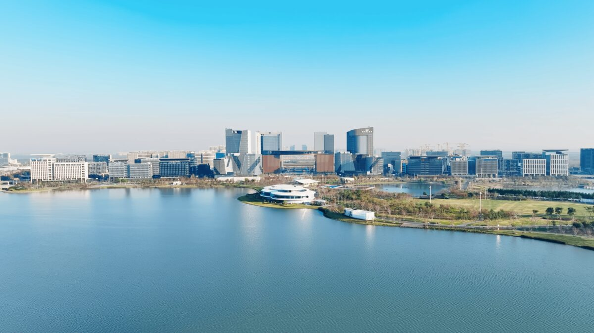
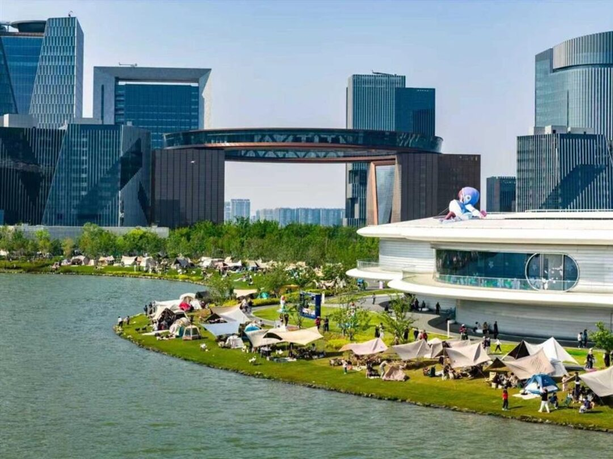
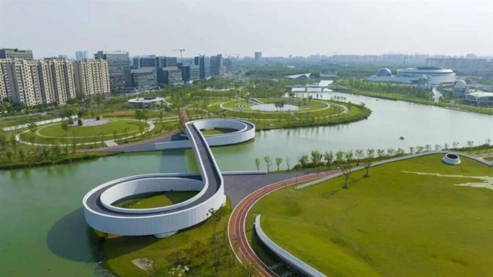

滴水湖与金融湾。图源：临港集团
五点五十，龙阳路站开出第一班16号线。
六点四十七，车停在滴水湖。出站，风先到。
很多人对临港的印象，是芯片厂、是写字楼、是晚上十点还亮着灯的办公室。没错，但那不是全部。
临港最舒服的时候，是早上七点。湖面还没被太阳晒热，草坪上只有遛狗的人和跑步的人，整个城市像刚洗完脸。
— 01 —
湖是挖出来的
滴水湖不是天然的。2002年6月动工，挖了15个月，运走1780多万立方米土，才有了这一汪圆水。
湖面直径2.5公里，整片区域5.56平方公里，湖里还有三座岛。站在岸边，对岸的楼看着很近，走起来才知道远。
早上来最大的好处，是人少。没有排队，没有抢机位，拍照不用等别人让开。
滴水湖的好，全在上午九点之前。

环湖草坪上，帐篷比人多。图源：乐游上海
我那天在湖边坐了二十分钟，看一个爷叔把折叠椅打开，保温杯拧开，茶叶倒进去，再拧上。动作很慢，一点不赶。
这大概就是临港的早晨。不热闹，但很松弛。
— 02 —
一圈8.5公里，别贪快
环湖一圈8.5公里。走完大概90分钟，骑车不到一小时，跑步的话，配速六分半刚好一圈。
路线不用记太细，从一号码头出发，沿着环湖绿带一直走，北岛、南岛、西岛挨个过一遍，最后回到起点。亲水平台、草坪、雕塑，都在路边。
带娃的走到北岛就可以折返，四公里左右，小孩不会闹。想刷完整圈的，把水带上，沿途补给点不算密。
湖边风比市区大。早上尤其凉，短袖出门十有八九要后悔。
共享单车地铁站外就有，但周末去得晚，常常一辆不剩。想骑，赶早。
骑得动的话，还有一条40公里的“棒棒糖”线路，从洲际酒店出发，绕环湖一路、环湖二路、环湖三路，把春花秋色公园、海绵公园、航海博物馆、天文馆全串起来。那是另一个强度，量力而行。
— 03 —
九点半，进馆

星空之境海绵公园，远处是上海天文馆。图源：乐游上海
太阳一高，湖边就晒了。这时候往馆里走，刚刚好。
上海天文馆在临港大道380号，9点半开馆，4点停止入馆，周一闭馆，法定节假日除外。成人票30块，周六和法定节假日会延时开放。
票要提前约。热门时段的票，周末常常几天前就没了，临时起意基本进不去。
旁边还有中国航海博物馆，和海绵公园那片水杉林。水杉秋天最好看，现在正是时候，一排排立在水边，风一吹，叶子往下掉。
如果只安排半天，我的顺序是：湖边先走一小时，九点半进馆，十一点半出来吃饭。
— 04 —
湖边吃什么
朵云书院、一尺花园、壹号码头，这几家都在环湖一带，书店加咖啡，坐着能看到水。
但它们大多十点前后才开门。真想吃口热的早饭，往地铁站和山兰路步行街那边走，选择更多，也更像本地人吃的东西。
周末中午，湖边这几家基本都要等位。错峰的办法很简单，十一点前落座。
一个上午的时间表，可以直接抄：
06:47 到站，湖边走走
07:30 环湖 8.5 公里
09:30 天文馆或航海博物馆
11:30 湖边吃饭，收工
— 05 —
临港还在长
湖边待久了会发现，这片地方一直没停。
滴水湖运动中心一期，9月底刚完成开工放样。位置在环湖北三路、香柏路、春涟河围起来的那块地，以后湖边跑步的人，多了个能进去练的地方。
金融湾的“荣耀之环”，1月完成建设，今年已经亮起来、用起来了。直径153米，环顶56米高，站上去能360度看整个滴水湖。光影节、世界技能大赛的临港专场，都往那儿放。
临港的上海288基地，5月启动，计划年底前完成大规模建设、启动内测。航空科幻IP落地临港，听着有点远，但工地在那儿。
医疗和教育也在补。按8月发布会上的说法，浦东医院临港院区年内建成，华东师范大学、同济大学的临港校区在加快推进。
10月28日，2026上海国际再保险会议也放在临港开。金融湾不只是几栋好看的楼，是真有人在里面做事。
这些不是效果图，是已经在发生的事。
所以每次有人问我，临港值不值得专门跑一趟。我的答案是：早上去，别下午去。
— 06 —
走之前，记三件事
带件外套。湖边的风，比市区大不止一点。
看好回程。滴水湖往龙阳路，末班车22:30，上午来的人多半用不上，但留着总没错。
周一天文馆闭馆，别白跑。票提前约，别赌现场。
这篇写的是上午。傍晚的滴水湖是另一副样子，灯光、人群、烟火气，留到下一篇说。
你最早一次到滴水湖，是几点？在评论区说说，我看看有多少人跟我坐过同一班车。
— 完 —
图源：临港集团、乐游上海
资料：上海发布、临港新片区管委会、上海天文馆